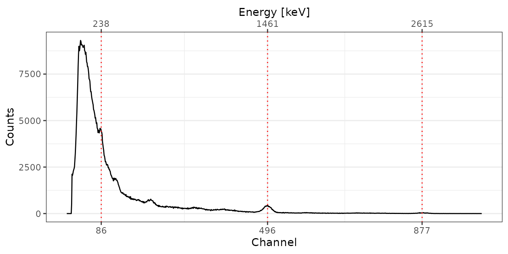

Obtaining a Dose Rate Calibration Curve
N. Frerebeau, B. Lebrun, S. Kreutzer
Last modified: 2024-09-23
Source:vignettes/doserate.Rmd
doserate.RmdScope
This vignette walks you through the steps to obtain a calibration curve for the gamma dose rate prediction. You will need the calibration curve to calculate the gamma dose rate from spectra measured in the field where the true gamma dose is yet to be determined. In other words, you will need this curve to analyse your field data.
Load library and import files
First things first, let’s load the gamma package.
Now, we will use already measured spectra shipped with gamma for this example. If you determine your calibration curve, you will need to use your own data. All data used here were measured with a NaI probe.
# Import CNF files for calibration
spc_dir <- system.file("extdata/AIX_NaI_1/calibration", package = "gamma")
spc <- read(spc_dir)
spc
#> A collection of 5 gamma spectra: BRIQUE, C341, C347, GOU, PEP
# Import a CNF file of background measurement
bkg_dir <- system.file("extdata/AIX_NaI_1/background", package = "gamma")
bkg <- read(bkg_dir)
bkg
#> Gamma spectrum:
#> * name: PB
#> * date: 2019-03-27 12:06:02
#> * live_time: 7707.42
#> * real_time: 7714.93
#> * channels: 1024
#> * energy_min: -7
#> * energy_max: 3124.91The object spc is a set of spectra measured in settings
around Clermont-Ferrand (Miallier et al.
2009) and Bordeaux (Richter et al.
2010) with a known gamma dose rate, where bgk is a
background curve measured in a lead castle.
Energy scale calibration
Before we can further work with the spectra, we have to perform an energy calibration, this is assigning values in terms of energy to the channel numbers.
Reference Spectra
First, we remove the baseline from the set of spectra for easier peak detection. , in the following subsections, we perform and apply the energy calibration to each spectrum, including the background spectrum. One subsection for each spectrum with the corresponding R code.
# Spectrum pre-processing
# Remove baseline for peak detection
bsl <- spc |>
signal_slice(-1:-40) |>
signal_stabilize(f = sqrt) |>
signal_smooth(method = "savitzky", m = 21) |>
signal_correct()BRIQUE
# Peak detection
pks <- peaks_find(bsl[["BRIQUE"]])
# Set energy values
set_energy(pks) <- c(238, NA, NA, NA, 1461, NA, NA, 2615)
# Adjust the energy scale
BRIQUE <- energy_calibrate(spc[["BRIQUE"]], pks)C341
# Spectrum pre-processing and peak detection
pks <- peaks_find(bsl[["C341"]])
# Set energy values
set_energy(pks) <- c(238, NA, NA, NA, 1461, NA, 2615)
# Adjust the energy scale
C341 <- energy_calibrate(spc[["C341"]], pks)
C347
# Spectrum pre-processing and peak detection
pks <- peaks_find(bsl[["C347"]], span = 10)
# Set energy values
set_energy(pks) <- c(238, NA, NA, NA, NA, 1461, NA, 2615)
# Adjust the energy scale
C347 <- energy_calibrate(spc[["C347"]], pks)
GOU
# Spectrum pre-processing and peak detection
pks <- peaks_find(bsl[["GOU"]])
# Set energy values
set_energy(pks) <- c(238, NA, NA, NA, 1461, NA, NA, 2615)
# Adjust the energy scale
GOU <- energy_calibrate(spc[["GOU"]], pks)
PEP
# Spectrum pre-processing and peak detection
pks <- peaks_find(bsl[["PEP"]])
# Set energy values
set_energy(pks) <- c(238, NA, NA, NA, 1461, NA, NA, 2615)
# Adjust the energy scale
PEP <- energy_calibrate(spc[["PEP"]], pks)
Background Spectrum
# Pb212, K40, Tl208
lines <- data.frame(
channel = c(86, 496, 870),
energy = c(238, 1461, 2615)
)
bkg_scaled <- energy_calibrate(bkg, lines = lines)
Signal integration
Two methods can be used to calculate a gamma dose rate from the
measured counts: the ‘window’ method and the ‘threshold’ method. The
‘window’ method compares counts under nuclide-specific gamma-ray peaks
to
reference spectra where the nuclide concentration is known. In this
case, only a small part of the spectrum is used. The ‘threshold’ method
uses the circumstance that above a certain threshold, the number of
counts for a given dose rate changes only slightly with the emitters
(e.g., U, Th, K – cf. Guérin, Mercier, and
Adamiec 2011; Mercier and Falguères 2007; Løvborg and Kirkegaard
1974).
The exact position of this threshold depends on the used probe and needs to be determined either by modelling or measurements of different sites with known but different radionuclides concentrations.
For this example (and in the package gamma in general), we will focus solely on the ‘threshold’ method, a crucial tool used to derive a calibration curve and derive gamma dose rates. This method’s practical application in deriving a calibration curve is a key aspect of our exploration. Our first step is to combine the energy-calibrated spectra into a unified set, laying the foundation for the subsequent calculations.
spc_scaled <- list(BRIQUE, C341, C347, GOU, PEP)
spc_scaled <- methods::as(spc_scaled, "GammaSpectra")
spc_scaled
#> A collection of 5 gamma spectra: BRIQUE, C341, C347, GOU, PEPNow we can integrate the spectra using either the cumulative count spectra or the energy corresponding to a certain energy (cf. Guérin, Mercier, and Adamiec 2011 for details).
The following two subsections show how to derive the integrated
spectrometer response with each technique. In both cases, however, we
assume that the threshold itself is already known! The
examples are for educational reasons only and the here used function
signal_integrate() is used in the back by the function
dose_fit() we will use later to derive the calibration
curve.
Using the count threshold
# Integration range (in keV)
Ni_range <- c(200, 2800)
# Integrate background spectrum
Ni_bkg <- signal_integrate(
object = bkg_scaled,
range = Ni_range,
energy = FALSE)
# Integrate reference spectra
Ni_spc <- signal_integrate(
object = spc_scaled,
range = Ni_range,
background = Ni_bkg,
energy = FALSE,
simplify = TRUE)Using the energy threshold
# Integration range (in keV)
NiEi_range <- c(200, 2800)
# Integrate background spectrum
NiEi_bkg <- signal_integrate(
object = bkg_scaled,
range = NiEi_range,
energy = TRUE)
# Integrate reference spectra
NiEi_signal <- signal_integrate(
object = spc_scaled,
range = NiEi_range,
background = NiEi_bkg,
energy = TRUE,
simplify = TRUE)Get dose rate calibration curve
The dose rate calibration curve models detector specific counts against a know gamma-dose so that such gamma dose can be derived from unknown spectra with the the same detector.
Model calibration curve
To model the calibration curve we will need have measured sites with
known radionuclide concentrations. 'gamma' ships a table
with values from know sites in the dataset clermont. If
you, as we have, measured with your probe in that locations you do not
have to manually add values from Miallier et al.
(2009) or Richter et al.
(2010).
| name | laboratory | nature | U | U_error | Th | Th_error | K2O | K2O_error | K | K_error | gamma_dose | gamma_error | cosmic_dose | cosmic_error | |
|---|---|---|---|---|---|---|---|---|---|---|---|---|---|---|---|
| BRIQUE | BRIQUE | Bordeaux | ceramic | 4.10 | 0.15 | 13.70 | 0.40 | NA | NA | 3.500000 | 0.100000 | 1986.4620 | 35.619679 | 152 | 6 |
| C341 | C341 | Clermont-Ferrand | trachybasalt | 1.80 | 0.05 | 6.42 | 0.40 | 1.65 | 0.03 | 1.369665 | 0.024903 | 849.9668 | 21.317615 | 170 | 15 |
| C347 | C347 | Clermont-Ferrand | granite | 2.84 | 0.12 | 4.67 | 0.10 | 4.27 | 0.10 | 3.544527 | 0.083010 | 1423.8589 | 25.249756 | 170 | 15 |
| GOU | GOU | Clermont-Ferrand | trachyandesite | 3.18 | 0.12 | 11.95 | 0.06 | 3.13 | 0.04 | 2.598213 | 0.033204 | 1575.2249 | 17.433789 | 110 | 15 |
| LAS | LAS | Clermont-Ferrand | basalt | 2.14 | 0.04 | 7.57 | 0.15 | 2.33 | 0.02 | 1.934133 | 0.016602 | 1083.6737 | 9.570593 | 120 | 20 |
| LMP | LMP | Clermont-Ferrand | basalt | 1.60 | 0.14 | 5.91 | 0.09 | 0.87 | 0.03 | 0.722187 | 0.024903 | 641.9004 | 17.560649 | 120 | 20 |
| MAZ | MAZ | Clermont-Ferrand | trachyandesite | 2.39 | 0.08 | 8.58 | 0.04 | 2.24 | 0.03 | 1.859424 | 0.024903 | 1141.4033 | 11.665045 | 200 | 20 |
| MPX | MPX | Clermont-Ferrand | sandstone | 1.38 | 0.03 | 3.61 | 0.20 | 3.08 | 0.04 | 2.556708 | 0.033204 | 964.0196 | 13.274167 | 110 | 15 |
| PEP | PEP | Clermont-Ferrand | granite | 6.00 | 0.20 | 19.00 | 2.00 | 4.63 | 0.24 | 3.843363 | 0.199224 | 2538.2217 | 112.169131 | 140 | 20 |
In the next step we create a list with additional information about the used equipment to be passed onto the calibration R object. You have to modify those values for your own detector.
# Metadata
info <- list(
laboratory = "CEREGE",
instrument = "InSpector 1000",
detector = "NaI",
authors = "CEREGE Luminescence Team"
)In the last step we construct the calibration curve and inspect the results.
# Build the calibration curve
AIX_NaI <- dose_fit(
object = spc_scaled,
background = bkg_scaled,
doses = doses,
range_Ni = Ni_range,
range_NiEi = NiEi_range,
details = info
)
AIX_NaI
#> Calibration curve:
#> * laboratory: CEREGE
#> * instrument: InSpector 1000
#> * detector: NaI
#> * authors: CEREGE Luminescence Team
#> * date: 2024-09-23 18:20:29.412633
#> * energy_calibration: <5 available>If this information seems too opaque , we can further inspect the
output numerically (summary()) and graphically using the
package plot() methods.
# show summary
summarise(AIX_NaI)
#> $Ni
#> $Ni$residuals
#> [1] 33.573851 7.952809 6.541241 -18.560316 78.345223
#>
#> $Ni$coefficients
#> Estimate Std. Error
#> Intercept 40.164150 41.7624590
#> Slope 9.138879 0.2714404
#>
#> $Ni$MSWD
#> [1] 0.8995128
#>
#> $Ni$df
#> [1] 3
#>
#> $Ni$p_value
#> [1] 0.4404757
#>
#>
#> $NiEi
#> $NiEi$residuals
#> [1] 33.906847 12.518973 -21.932740 -8.121079 86.161275
#>
#> $NiEi$coefficients
#> Estimate Std. Error
#> Intercept 27.88558657 4.202809e+01
#> Slope 0.01735135 5.142108e-04
#>
#> $NiEi$MSWD
#> [1] 0.9375135
#>
#> $NiEi$df
#> [1] 3
#>
#> $NiEi$p_value
#> [1] 0.4214397
# plot calibration curves
plot(AIX_NaI, energy = FALSE) +
ggplot2::theme_bw()
plot(AIX_NaI, energy = TRUE) +
ggplot2::theme_bw()

Well, this looks all good and should make a good calibration curve.
To use this calibration curve in the future, you can save the object
using the base R function save().
save(AIX_NaI, file = "<you_path>/<date>_NaI_DoseRate_Calibration.rda")


Application example: opredict new dose rates
After calibrating our detector, it is time to derive gamma dose rates
from sites with unknown radionuclide concentrations. As mentioned above,
we will use data we ship with 'gamma'. Our routine analysis
consists of only three steps:
Import measured data
# Import CNF files for dose rate prediction
test_dir <- system.file("extdata/AIX_NaI_1/test", package = "gamma")
test <- read(test_dir)
Energy calibrate the spectra
# Pb212, K40, Tl208
pks <- data.frame(
channel = c(86, 490, 870),
energy = c(238, 1461, 2615)
) |> as("PeakPosition")
## energy calibrate
test <- energy_calibrate(test, pks)
## check the calibration for one curve
plot(test[[1]], pks) +
ggplot2::theme_bw()
## show all energy calibrated spectra
# Inspect spectra
plot(test, xaxis = "energy", yaxis = "rate") +
ggplot2::theme_bw()
Predict the dose rates
rates <- dose_predict(AIX_NaI, test, sigma = 1.96)
rates
#> name signal_Ni signal_err_Ni dose_Ni dose_err_Ni signal_NiEi
#> 1 NAR19-P2-1 90.60172 0.2479502 868.1623 52.24518 47953.18
#> 2 NAR19-P3-1 110.13766 0.2452741 1046.6989 62.96733 58543.44
#> 3 NAR19-P4-1 87.45143 0.2736257 839.3722 50.52866 46393.01
#> 4 NAR19-P5-1 138.48561 0.3079133 1305.7674 78.55221 74020.40
#> 5 NAR19-P6-1 115.97222 0.3587824 1100.0202 66.21719 62016.48
#> signal_err_NiEi dose_NiEi dose_err_NiEi dose_final dose_err_final
#> 1 5.729871 859.9379 51.58826 864.0501 73.42087
#> 2 5.676295 1043.6933 62.61183 1045.1961 88.79779
#> 3 6.330354 832.8669 49.96429 836.1196 71.05887
#> 4 7.139047 1312.2395 78.72209 1309.0034 111.21021
#> 5 8.323213 1103.9552 66.22706 1101.9877 93.65265Note: We assume here that the energy scale of each spectrum was adjusted first.
Outro: our R session
Finally, for transparency, the R session setting used for rendering this vignette.
#> R version 4.4.1 (2024-06-14)
#> Platform: x86_64-pc-linux-gnu
#> Running under: Ubuntu 22.04.5 LTS
#>
#> Matrix products: default
#> BLAS: /usr/lib/x86_64-linux-gnu/openblas-pthread/libblas.so.3
#> LAPACK: /usr/lib/x86_64-linux-gnu/openblas-pthread/libopenblasp-r0.3.20.so; LAPACK version 3.10.0
#>
#> locale:
#> [1] LC_CTYPE=C.UTF-8 LC_NUMERIC=C LC_TIME=C.UTF-8
#> [4] LC_COLLATE=C.UTF-8 LC_MONETARY=C.UTF-8 LC_MESSAGES=C.UTF-8
#> [7] LC_PAPER=C.UTF-8 LC_NAME=C LC_ADDRESS=C
#> [10] LC_TELEPHONE=C LC_MEASUREMENT=C.UTF-8 LC_IDENTIFICATION=C
#>
#> time zone: UTC
#> tzcode source: system (glibc)
#>
#> attached base packages:
#> [1] stats graphics grDevices utils datasets methods base
#>
#> other attached packages:
#> [1] gamma_1.1.0
#>
#> loaded via a namespace (and not attached):
#> [1] gtable_0.3.5 jsonlite_1.8.9 highr_0.11 compiler_4.4.1
#> [5] Rcpp_1.0.13 rxylib_0.2.14 jquerylib_0.1.4 systemfonts_1.1.0
#> [9] scales_1.3.0 textshaping_0.4.0 yaml_2.3.10 fastmap_1.2.0
#> [13] ggplot2_3.5.1 R6_2.5.1 IsoplotR_6.3 labeling_0.4.3
#> [17] knitr_1.48 tibble_3.2.1 desc_1.4.3 munsell_0.5.1
#> [21] bslib_0.8.0 pillar_1.9.0 rlang_1.1.4 utf8_1.2.4
#> [25] cachem_1.1.0 xfun_0.47 fs_1.6.4 sass_0.4.9
#> [29] cli_3.6.3 pkgdown_2.1.1 withr_3.0.1 magrittr_2.0.3
#> [33] digest_0.6.37 grid_4.4.1 lifecycle_1.0.4 vctrs_0.6.5
#> [37] evaluate_1.0.0 glue_1.7.0 farver_2.1.2 ragg_1.3.3
#> [41] fansi_1.0.6 colorspace_2.1-1 rmarkdown_2.28 tools_4.4.1
#> [45] pkgconfig_2.0.3 htmltools_0.5.8.1